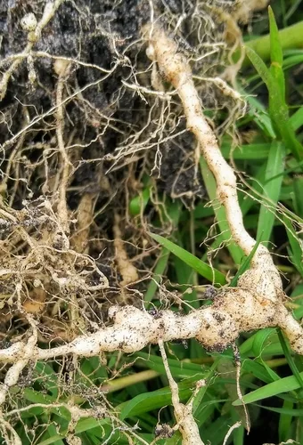

吸收根本身长出成串小结
蔬菜浇水后仍矮小，可在尚未枯死时挖一株检查。根结线虫会使细根膨大，午后高温时吸水更易跟不上。

现场检查
连土挖起，在容器上方冲净一小段。沿细根逐个追踪隆起，根结是根本身膨大，并非贴在表面的松散小珠。
鉴别相似表现
豌豆、菜豆也有有益的固氮根瘤，常着生在根的一侧。两种情况可并存，仅凭单个结块照片无法鉴定线虫种类。
处理选择
避免将可疑土带入新畦。计划轮作或选抗病品种时，先咨询当地实验室，了解如何采集发病区边缘的活根和土样。
后续复查
标出哪些作物有根结、邻近哪些株仍健壮。样本分别标寄主和品种，对一种线虫有抗性不代表对所有种类均有效。
寄主检查要点
检查番茄时兼取外侧细分根及近茎粗根。只看根颈容易遗漏较远处散在的小根结。